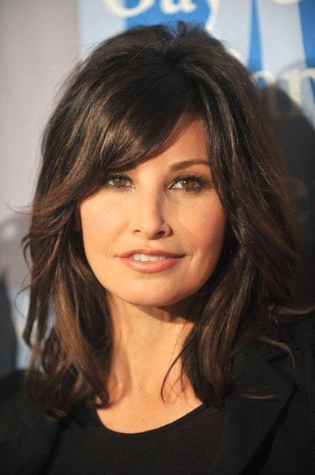
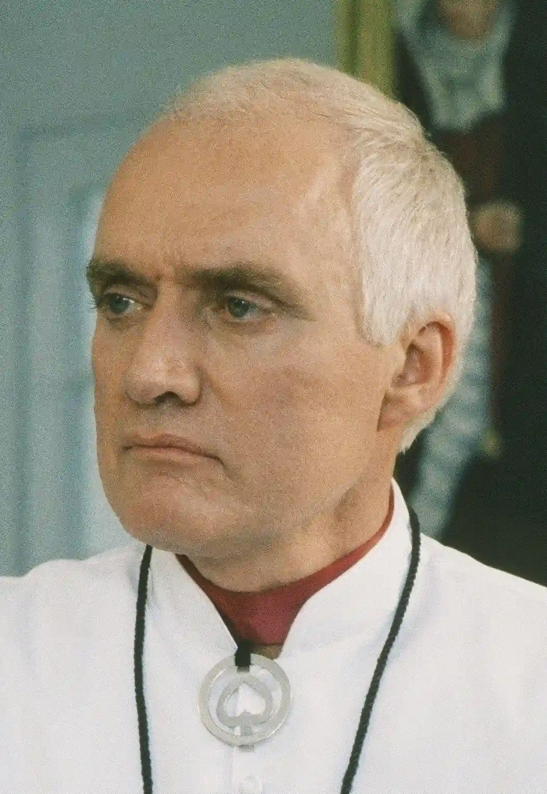
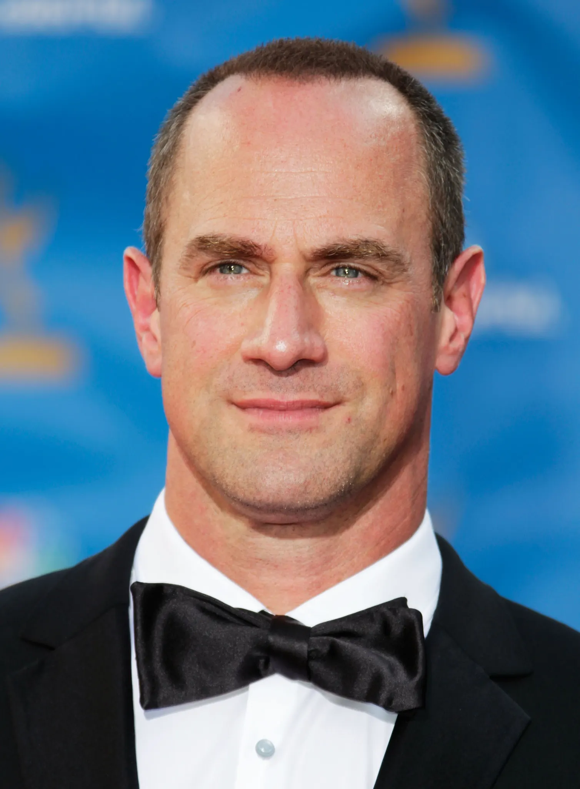
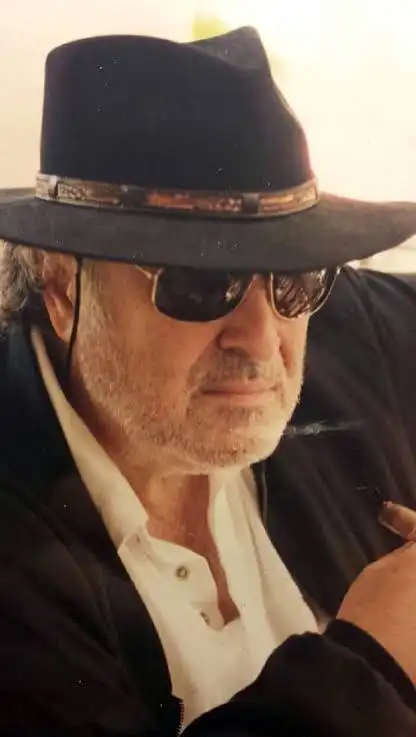
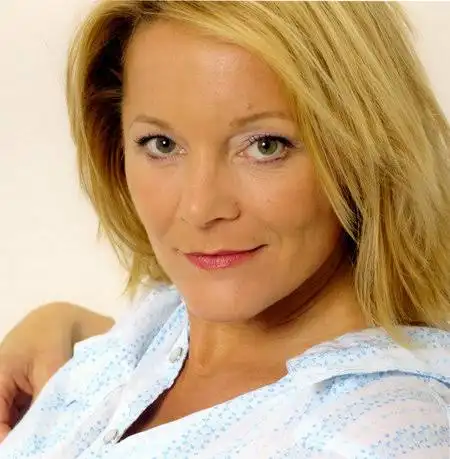

Bound1996
Corky, a tough ex-con working as a plumber, catches the attention of Violet, the girlfriend of mob money launderer Caesar. When the two women begin a relationship, they devise a risky plan to steal two million dollars and escape Caesar’s criminal world. But a carefully arranged scheme begins to unravel when Caesar reacts unpredictably.
Watch Bound (1996)
A Dangerous Game of Trust and Deception
Bound (1996) is a stylish neo-noir crime thriller from filmmakers Lana Wachowski and Lilly Wachowski. Corky, an ex-convict working as a plumber in an apartment building, meets Violet, who lives next door with her boyfriend Caesar, a mob-connected money launderer. As Corky and Violet grow close, they plot to take two million dollars from the mob and frame Caesar for the missing cash. Their plan depends on timing, nerve and trust, but Caesar’s volatile response turns the apartment building into a pressure cooker. The film is known for its tightly constructed heist plot, sharp visual style and central performances by Gina Gershon and Jennifer Tilly.
Bound Cast & Characters





More Like Bound